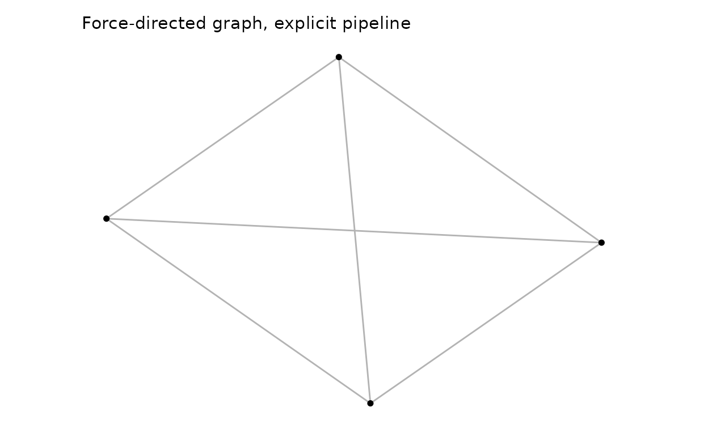
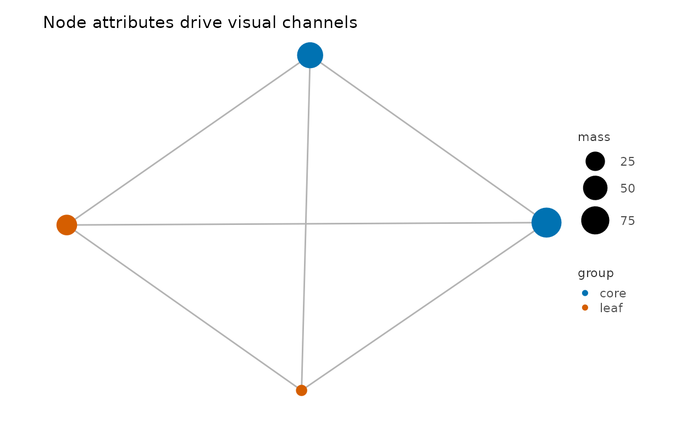
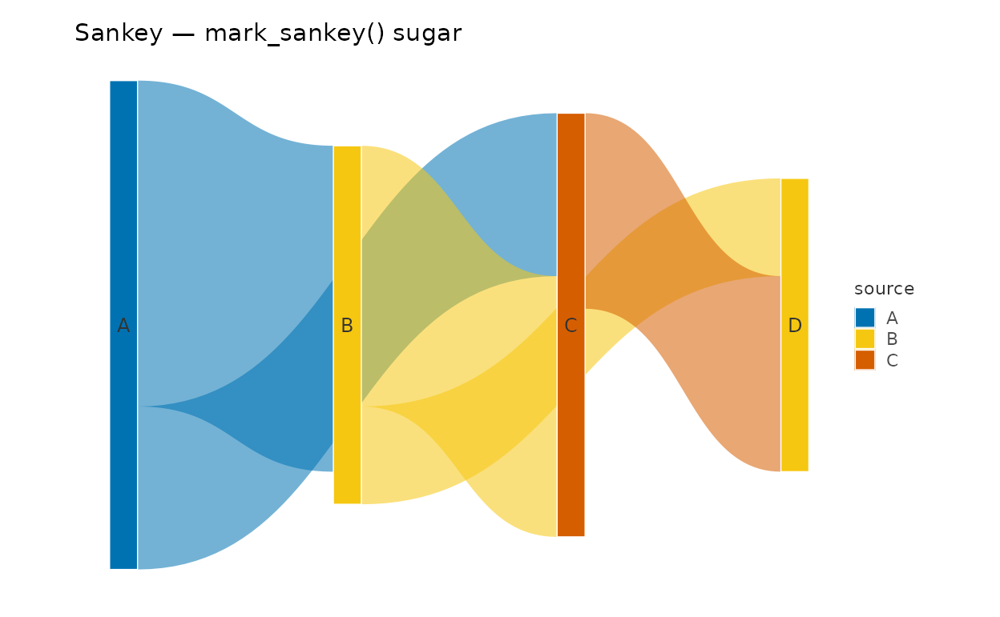
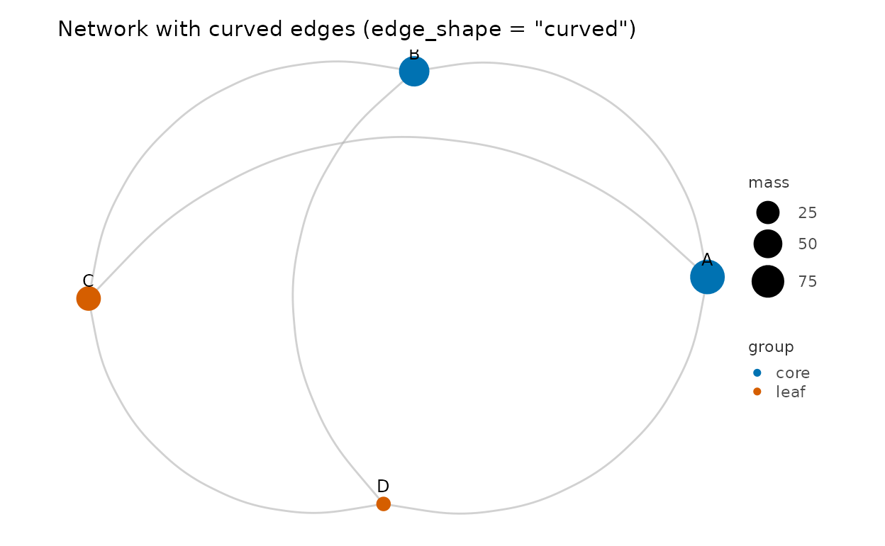
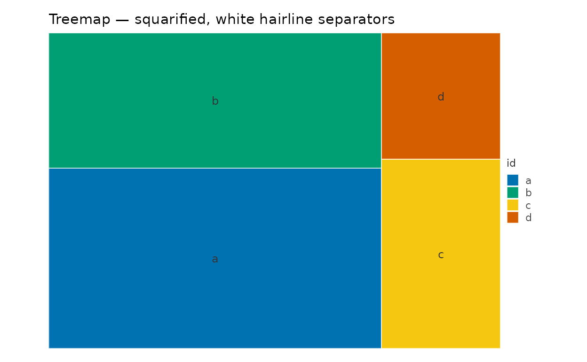
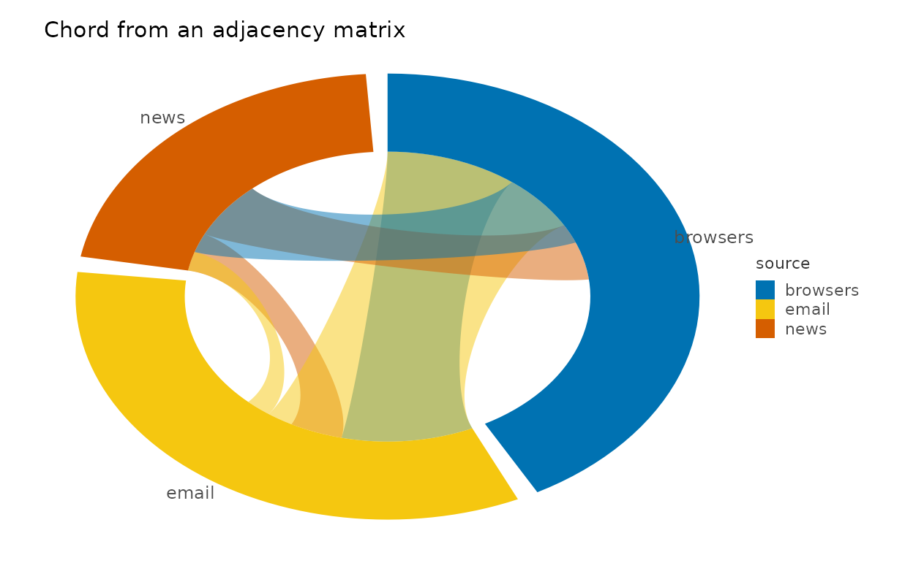
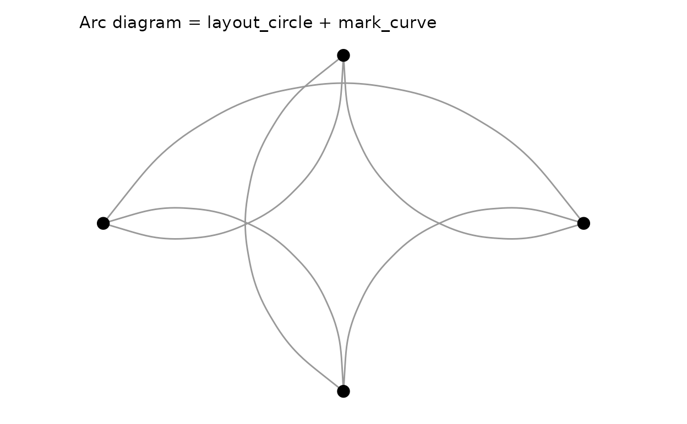
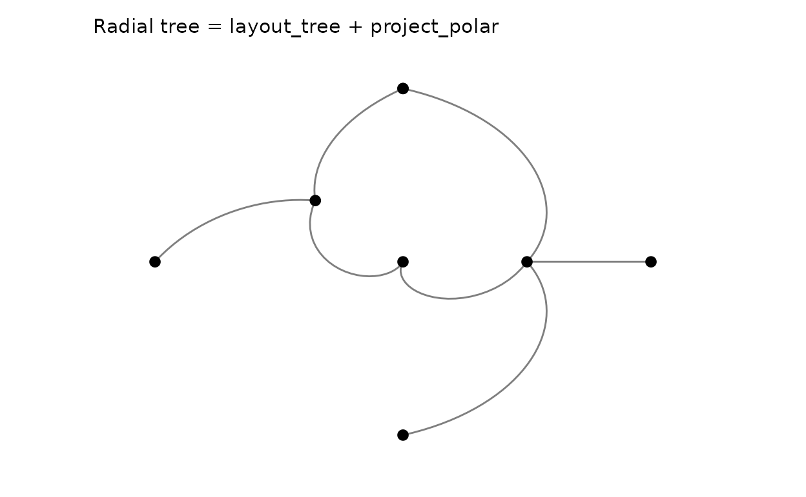
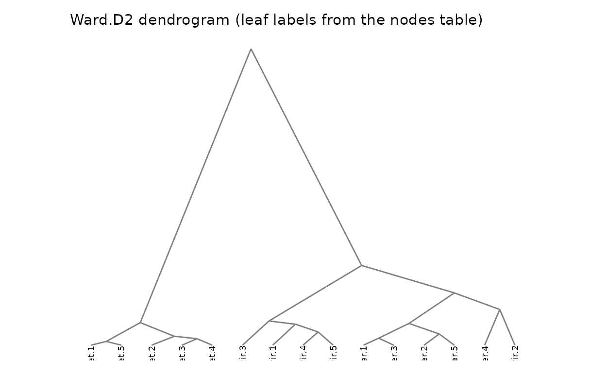
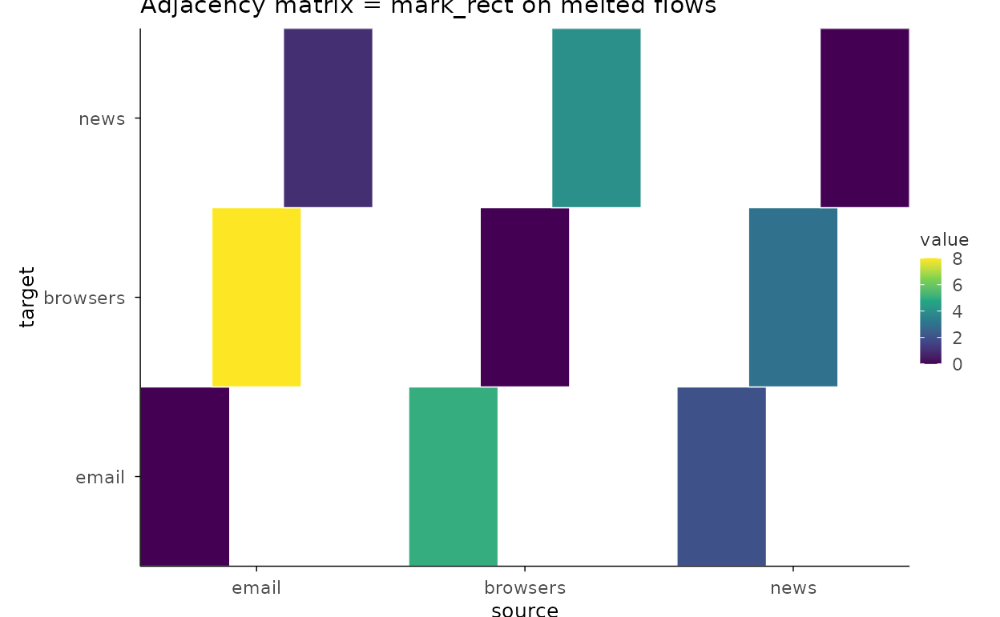

Why relational charts need their own data model
Everything in the other articles is tabular: one row, one mark. A network diagram breaks that assumption twice over. A node has no intrinsic position — where it sits is the output of a layout computation. And one row is not even the right unit: a relation has two endpoints, so nodes and edges live in different tables with different cardinality.
plotit answers this the way Vega’s dataflow does — a layout
is a data transform, not a layer. You coerce relations into a
plotit_graph (a named collection of plain data frames),
pass each layout_*() step a plotit object, and
the layout bakes coordinates into the tables. Rendering then
uses the ordinary marks you already know:
edges / matrix / tree ──as_graph()──▶ plotit_graph ──layout_*()──▶ x/y columns appear
│
plotit(graph) ──▶ mark_point(data = ~nodes) ──▶Nothing else about the grammar changes: scale_*(),
label_*(), style(), export(), the
+ escape hatch, and ... passthrough all work
on relational plots exactly as before.
Step 1 — as_graph(): one container, five input
formats
library(plotit)
edges <- data.frame(
source = c("A", "A", "B", "B", "C", "D"),
target = c("B", "C", "C", "D", "D", "A"),
value = c(4, 2, 6, 3, 5, 1)
)
g <- as_graph(edges)
names(g)
#> [1] "nodes" "edges"
g$nodes
#> id
#> 1 A
#> 2 B
#> 3 C
#> 4 DA plotit_graph is a named list of data frames —
nodes and edges are the canonical tables, and
layouts may add derived ones (ribbons, arcs,
leaves). as_graph() recognizes five input
shapes:
| Input | Shape required | Typical source |
|---|---|---|
| edge table |
source/target (+ optional
value); other names via
source =/target =/value =
arguments |
tidy graphs, event logs |
matrix / table
|
M[row, col] melts to source = row, target = col (zero
cells dropped) |
flow matrices, confusion matrices |
hclust / dendrogram
|
converted automatically; merge heights kept on nodes | cluster trees |
| hierarchy table |
id + parent (+ optional per-leaf
value) |
org charts, taxonomies, file trees |
tbl_graph |
activated node/edge tables, direction detected | tidygraph pipelines |
Keys are coerced to character; when a nodes table is
omitted, nodes are synthesized in first-appearance order (the Vega
convention). A node table must carry an id column:
nodes <- data.frame(
id = c("A", "B", "C", "D"),
group = c("core", "core", "leaf", "leaf"),
mass = c(90, 60, 30, 10)
)
as_graph(edges, nodes = nodes)$edges
#> source target value
#> 1 A B 4
#> 2 A C 2
#> 3 B C 6
#> 4 B D 3
#> 5 C D 5
#> 6 D A 1Step 2 — layout_*(): coordinates as transforms
Seven layouts, all pure R, all deterministic (the force engine is seeded), and all returning a new object — pipelines never mutate:
p_force <- g |>
plotit() |>
layout_force(seed = 1)
p_circle <- g |>
plotit() |>
layout_circle(order_by = "degree")-
layout_force()— Fruchterman–Reingold simulation (repulsion matrix + attraction accumulate + linear cooling).seedguarantees reproducibility,iterationscontrols quality, andweights = TRUElets edgevaluepull harder. -
layout_circle()— nodes on a ring, ordered by id or degree. -
layout_tree(direction = "down" | "up" | "left" | "right")— orthogonal tree from anid/parenthierarchy. -
layout_dendrogram(direction = ...)— same tree but keeps merge heights as the depth axis (fromhclustinputs). -
layout_treemap()— Bruls squarified rectangles (xmin…ymax + a derivedleavestable). -
layout_sankey()— longest-path layering + barycenter sweeps; emits bezierribbons. -
layout_chord()— sector angles proportional to flow; emitsarcsandribbons.
Every laid-out table carries geometry columns —
x/y on nodes,
x/y/xend/yend on
edges, corner boxes on treemap leaves, polygon chains in
ribbons/arcs. Which is exactly what marks
speak. Layouts are idempotent recomputations: chain another
layout_*() later and it wins (stale geometry is stripped
first).
p <- g |>
plotit() |>
layout_force(seed = 1)
head(data.frame(p@graph$edges))
#> source target value x y xend yend
#> 1 A B 4 0.94973503 0.4676873 0.47248797 0.9500000
#> 2 A C 2 0.94973503 0.4676873 0.05026497 0.5300873
#> 3 B C 6 0.47248797 0.9500000 0.05026497 0.5300873
#> 4 B D 3 0.47248797 0.9500000 0.52982362 0.0500000
#> 5 C D 5 0.05026497 0.5300873 0.52982362 0.0500000
#> 6 D A 1 0.52982362 0.0500000 0.94973503 0.4676873Step 3 — render with ordinary marks via ~table
Pass a one-sided formula as a mark’s data to select a
graph table. Layout geometry binds automatically
(x/y, endpoints, corners — whichever the mark
understands), so you rarely map positions at all:
g |>
plotit() |>
layout_force(seed = 1) |>
mark_rule(data = ~edges, color = "grey70") |>
mark_point(data = ~nodes) |>
label_title("Force-directed graph, explicit pipeline")
Node attributes drive visual channels by mapping them in the layer (the graph has no global mapping — aesthetics are declared per table):
as_graph(edges, nodes = nodes) |>
plotit() |>
layout_force(seed = 7) |>
mark_rule(data = ~edges, color = "grey70") |>
mark_point(data = ~nodes, encode(size = mass, colour = group)) |>
scale_size(range = c(3, 9)) |>
label_title("Node attributes drive visual channels")
This explicit form is the power user’s route: any mark that understands a table’s columns can render it, and you can interleave more than the sugars do (curved links, labels on one subset, halos…).
Step 4 — the sugar marks: one call for the four classics
For the most common relational charts, mark_network(),
mark_sankey(), mark_chord() and
mark_treemap() bundle layout + layers + label styling into
a single verb. Each expands exactly to a documented pipeline,
so nothing is hidden — and the laid-out tables stay on
@graph afterwards for further tuning:
flows <- data.frame(
source = c("A", "A", "B", "B", "C"),
target = c("B", "C", "C", "D", "D"),
value = c(10, 5, 8, 3, 6)
)
flows |>
plotit(encode(
source = source, target = target,
value = value, fill = source
)) |>
mark_sankey(edge_alpha = 0.55) |>
label_title("Sankey — mark_sankey() sugar")
#> Coordinate system already present.
#> ℹ Adding new coordinate system, which will replace the existing one.
nodes |>
plotit(encode(colour = group, size = mass, label = id)) |>
mark_network(edges = edges, seed = 3, edge_shape = "curved", edge_alpha = 0.6) |>
scale_size(range = c(3, 8)) |>
label_title("Network with curved edges (edge_shape = \"curved\")")
edge_shape = "curved" routes the edge layer through
mark_curve() (straight rules remain the default). The four
sugars share one vocabulary: node_color,
edge_color / edge_width /
edge_alpha, and show_labels — see
?mark_network.
h <- data.frame(
id = c("root", "em", "srch", "a", "b", "c", "d"),
parent = c(NA, "root", "root", "em", "em", "srch", "srch"),
value = c(NA, NA, NA, 32, 24, 12, 8)
)
h |>
plotit(encode(fill = id)) |>
mark_treemap() |>
label_title("Treemap — squarified, white hairline separators")
mat <- matrix(c(0, 5, 2, 8, 0, 3, 1, 4, 0),
nrow = 3,
dimnames = list(
c("email", "browsers", "news"),
c("email", "browsers", "news")
)
)
as_graph(mat, directed = TRUE)$edges |>
plotit(encode(
source = source, target = target,
value = value, fill = source
)) |>
mark_chord() |>
label_title("Chord from an adjacency matrix")
Composing relational views from primitives
The payoff of “layout = transform” is that new chart types are just pipelines — no new verbs.
Arc diagram (network on a line)
A circular layout drawn with curved links is the classic arc diagram;
for a straight baseline, place nodes manually with a
manual-style pipeline (x = level(seq), y = 0
columns bound with mark_point) and keep
mark_curve for the links:
edges |>
as_graph(nodes = data.frame(id = c("A", "B", "C", "D"))) |>
plotit() |>
layout_circle(order_by = "degree") |>
mark_curve(data = ~edges, curvature = 0.6, color = "grey60") |>
mark_point(data = ~nodes, size = 3.5) |>
label_title("Arc diagram = layout_circle + mark_curve")
Radial tree
layout_tree(direction = "right") puts depth on
x and leaf order on y;
project_polar(theta = "y") turns the pair into
radius/angle:
as_graph(data.frame(
id = c("root", "A", "B", "a1", "a2", "a3", "b1", "b2"),
parent = c(NA, "root", "root", "A", "A", "A", "B", "B")
)) |>
plotit() |>
layout_tree(direction = "right") |>
mark_rule(data = ~edges) |>
mark_point(data = ~nodes, size = 2.5) |>
project_polar(theta = "y") |>
label_title("Radial tree = layout_tree + project_polar")
Dendrogram from a cluster
# A 150-leaf dendrogram smears its labels; a small subset keeps it legible.
iris15 <- iris[c(1:5, 51:55, 101:105), 1:4]
rownames(iris15) <- paste0(rep(c("set", "ver", "vir"), each = 5), ".", 1:5)
hc <- hclust(dist(iris15), method = "ward.D2")
p_dendro <- as_graph(hc) |>
plotit() |>
layout_dendrogram()
p_dendro |>
mark_rule(data = ~edges) |>
mark_text(
data = subset(p_dendro@graph$nodes, leaf),
mapping = encode(x = x, y = y, label = id),
size = 2.5, angle = 90, hjust = 1, vjust = 0.5
) |>
label_title("Ward.D2 dendrogram (leaf labels from the nodes table)")
Adjacency-matrix heatmap (relations as grid)
For small graphs a melted flow matrix rendered with
mark_rect() is an honest alternative to a hairball:
df <- as.data.frame(as.table(mat))
names(df) <- c("source", "target", "value")
df |>
plotit(encode(x = source, y = target, fill = value)) |>
mark_rect() |>
label_title("Adjacency matrix = mark_rect on melted flows")
Limitations and guarantees
-
split_*()faceting of graph data is deliberately unsupported in v1: layouts compute positions globally, so facet-wise edge filtering would produce inconsistent tables. Facet the inputs instead. - The force layout is deterministic given a seed; changing
iterationsmay still reorder nodes. For absolute stability, carry explicitx/ycolumns on the nodes table (they pass throughmark_point(data = ~nodes)untouched). - Every sugar mark keeps its laid-out tables on
@graphand its expansion in the docs — a sugar can always be “unwrapped” to the explicit pipeline without any visual change. - Straight vs curved edges, label placement, and per-group styling belong to the explicit pipeline form; sugars expose only the vocabulary above.
Design lineage
Vega-Lite reaches this territory with imperative
joinaggregate/custom layout transforms; AntV G2 5.0 ships
sankey/chord/forceGraph as
library marks whose internal expansion is again a handful of primitive
marks; D3 hands you layout functions and expects the binding yourself;
Observable Plot covers curves and matrices but not graph layouts. plotit
splits the difference: the engine stays in the package (pure R,
deterministic, dependency-free), the geometry lands in ordinary
data frames, and the renderer is the same mark_*
grammar you already use for scatter plots — composition, not special
cases.